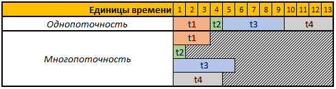
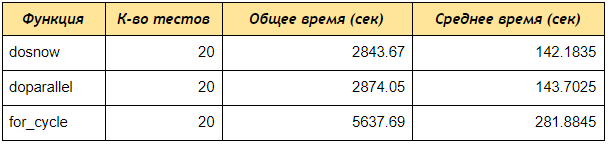

Как ускорить работу с API на языке R с помощью параллельных вычислений, на примере API Яндекс.Директ (Часть 1)
Язык R на сегодняшний день является одним из мощнейших и многофункциональных инструментов для работы с данными, но как мы знаем практически всегда, в любой бочке мёда найдётся ложка дёгтя. Дело в том, что R по умолчанию является однопоточным.
Скорее всего достаточно длительное время вас это не будет беспокоить, и вы вряд ли будете задаваться этим вопросом. Но к примеру если вы столкнулись с задачей сбора данных из большого количества рекламных аккаунтов из API, например Яндекс. Директ, то вы значительно, как минимум в два — три раза, можете сократить время на сбор данных используя многопоточность.
Тема многопоточности в R не нова, и уже неоднократно поднималась на Хабре тут, тут и вот тут, но последняя публикация датируется 2013 годом, и как говорится всё новое это хорошо забытое старое. К тому же ранее обсуждалась многопоточность для расчёта моделей и обучения нейросетей, а мы будем говорить о применении асинхронности для работы с API. Тем не менее я хотел бы пользуясь случаем поблагодарить авторов приведённых статей т.к. в написании этой статьи они мне очень помогли своими публикациями.
Содержание
- Что такое многопоточность
- Какие пакеты мы будем использовать
- Задача
- Авторизация в Яндекс. Директ, пакет ryandexdirect
- Решение в однопоточном, последовательном режиме, с использованием цикла for
- Решение с помощью многопоточности в R
- Пакет doSNOW и особенности работы в многопоточном режиме
- Пакет doParallel
- Тест скорости между тремя рассмотренными подходами, пакет rbenchmark
- Заключение
Вторая часть статьи, в которой речь идёт о более современных вариантах реализации многопоточности в R доступна по ссылке.
Впервые статья была опубликована на Хабре.
первоисточник
Что такое многопоточность
Однопоточность (Последовательные вычисления) — режим вычисления при котором все действия (задачи) выполняются последовательно, общая длительность выполнения всех заданных операций в данном случае будет равняться сумме длительности выполнения всех операций.
Многопоточность (Параллельные вычисления) — режим вычислений, при котором заданные действия (задачи) выполняются параллельно, т.е. одновременно, при этом общее время выполнения всех операций не будет равняться сумме длительности выполнения всех операций.
Для упрощения восприятия давайте рассмотрим следующую таблицу:

Первая строка приведённой таблицы это условные временные единицы, в данном случае нам не важно это секунды, минуты или ещё какие либо временные отрезки.
В этом примере нам необходимо выполнить 4 операции, каждая операция при этом имеет разную длительность вычисления, в однопоточном режиме все 4 операции будут выполняться последовательно друг за другом, следовательно общее время на их выполнение будет равно t1+t2+t3+t4, 3+1+5+4=13.
В многопоточном режиме все 4 задачи будут выполняться параллельно, т.е. для запуска следующей задачи, нет необходимости ждать пока будет выполнена предыдущая, таким образом если запустить выполнение нашей задачи в 4 потока то общее время вычисления будет равно времени вычисления самой большой задачи, в нашем случае это задача t3, длительность вычисления которой в нашем примере равна 5 временным единицам, соответственно и время выполнения всех 4ёх операций в этом случае будет равно 5 временным единицам.
Какие пакеты мы будем использовать
Для вычислений в многопоточном режиме мы будем использовать пакеты foreach, doSNOW и doParallel.
Пакет foreach позволяет вам использовать конструкцию foreach, которая по смыслу является усовершенствованным циклом for.
Пакеты doSNOW и doParallel по сути братья близнецы, позволяют вам создавать виртуальные кластера, и с их помощью выполнять параллельные вычисления.
В завершении статьи с помощью пакета rbenchmarkмы измерим и сравним длительность выполнения операций сбора данных из API Яндекс. Директ с применением всех описанных ниже методов.
Для работы с API Яндекс. Директ будем использовать пакет ryandexdirect, в этой статье мы его используем в качестве примера, подробнее о его возможностях и функциях можно узнать из официальной документации.
Код для установки всех нужных пакетов:
install.packages("foreach")
install.packages("doSNOW")
install.packages("doParallel")
install.packages("rbenchmark")
install.packages("ryandexdirect")
Задача
Необходимо написать код, который будет запрашивать список ключевых слов из любого количества рекламных аккаунтов Яндекс. Директ. Полученный результат необходимо собрать в один дата фрейм, в котором будет дополнительное поле с логином рекламного аккаунта которому принадлежит ключевое слово.
При этом наша задача написать код, который будет выполнять эту операцию максимально быстро на любом количестве рекламных аккаунтов.
Авторизация в Яндекс. Директ
Для работы с API рекламной платформы Яндекс. Директ изначально требуется пройти авторизацию под каждым аккаунтом из которого мы планируем запросить список ключевых слов.
Весь приведённой в данной статье код отражает пример работы с обычными рекламными аккаунтами Яндекс. Директ, если вы работаете под агентским аккаунтом то вам необходимо использовать аргумент AgencyAccount, и передать в него логин агентского аккаунта. Более подробно о работе с агентскими аккаунтами Яндекс. Директ с помощью пакета ryandexdirect можно узнать вот тут.
Для авторизации требуется выполнить функцию yadirAuth из пакета ryandexdirect, повторить приведённый ниже код необходимо для каждого аккаунта из которого вы будете запрашивать список ключевых слов и их параметры.
ryandexdirect::yadirAuth(Login = "логин рекламного аккаунта на Яндексе")
Процесс авторизации в Яндекс. Директ через пакет ryandexdirect совершенно безопасен, не смотря на то, что проходит через сторонний сайт. Подробно о безопасности его использования я уже рассказывал в статье “Насколько безопасно использовать R пакеты для работы с API рекламных систем”.
После авторизации под каждым аккаунтом в вашей рабочей директории будет создан файл логин.yadirAuth.RData, в котором будут хранится учётные данные для каждого аккаунта. Название файла будет начинать на указанный в аргументе Login логин. Если вам необходимо сохранять файлы не в текущей рабочей директории, а в какой либо другой папке используйте аргумент TokenPath, но в таком случае и при запросе ключевых слов с помощью функции yadirGetKeyWords вам также надо использовать аргумент TokenPath и указать путь к папке в который вы сохранили файлы с учётными данными.
Решение в однопоточном, последовательном режиме, с использованием цикла for
Наиболее простой способ собрать данные сразу из нескольких аккаунтов — использовать цикл for. Простой но не самый эффективный, т.к. один из принципов разработки на языке R — избегать использования циклов в коде.
Ниже приведён пример кода, для сбора данных из 4ёх аккаунтов используя цикл for, на самом деле вы можете с помощью этого примера собрать данные из любого количества рекламных аккаунтов.
Код 1: Обрабатываем 4 аккаунта с помощью обычного цикла for
library(ryandexdirect)
# вектор логинов
logins <- c("login_1", "login_2", "login_3", "login_4")
# результирующий дата фрейм
res1 <- data.frame()
# цикл сбора данных
for (login in logins) {
temp <- yadirGetKeyWords(Login = login)
temp$login <- login
res1 <- rbind(res1, temp)
}
Замер времени выполнения с помощью функции system.time показал следующий результат:
Время работы:
пользователь: 178.83
система: 0.63
прошло: 320.39
Сбор ключевых слов по 4ём аккаунтам занял 320 секунд, при этом из информационных сообщений которые выводит в ходе работы функция yadirGetKeyWords видно самый большой аккаунт из которого было получено 5970 ключевых слов обрабатывался 142 секунды.
Решение с помощью многопоточности в R
Выше я уже писал, что для многопоточности мы будем использовать пакеты doSNOW и doParallel.
Хочу обратить внимание на то, что практически у любого API есть свои ограничения, и API Яндекс. Директ не исключение. На самом деле в справке по работе с API Яндекс. Директ сказано:
Допускается не более пяти одновременных запросов к API от лица одного пользователя.
Поэтому не смотря на то, что мы в данном случае будем рассматривать пример с созданием 4ёх потоков, в работе с Яндекс. Директ вы можете создать 5 потоков даже если все запросы вы будете отправлять под одним и тем же пользователем. Но наиболее рационально использовать 1 поток на 1 ядро вашего процессора, определить количество физических ядер процессора можно с помощью команды parallel::detectCores(logical = FALSE), количество логических ядер можно узнать с помощью parallel::detectCores(logical = TRUE). Более подробно разобраться в том, что такое физическое и логическое ядро можно на википедии.
Помимо ограничения на количество запросов, существует суточное ограничение на количество баллов для доступа к API Яндекс. Директ, у всех аккаунтов оно может быть разным, каждый запрос тоже расходует разное количество баллов в зависимости от выполняемой операции. Например за запрос списка ключевых слов с вас спишется 15 баллов за выполненный запрос и по 3 балла за каждые 2000 слов, о том как списываются баллы можно узнать в официальной справке. Так же информацию о количестве списанных и доступных баллов, а так же об их дневном лимите вы видите в информационных сообщениях возвращаемых в консоль функцией yadirGetKeyWords.
Number of API points spent when executing the request: 60
Available balance of daily limit API points: 993530
Daily limit of API points:996000
Давайте разберёмся с doSNOWи doParallel по порядку.
Пакет doSNOW и особенности работы в многопоточном режиме
Перепишем туже операцию на многопоточный режим вычислений, создадим при этом 4 потока, и вместо цикла for будем использовать конструкцию foreach.
Код 2: Параллельные вычисления с помощью пакета doSNOW
library(foreach)
library(doSNOW)
# вектор логинов
logins <- c("login_1", "login_2", "login_3", "login_4")
cl <- makeCluster(4)
registerDoSNOW(cl)
res2 <- foreach(login = logins, # переменная - счётчик
.combine = 'rbind', # функция объедения результатов полученных на всех итерациях
.packages = "ryandexdirect", # экспорт пакетов
.inorder=F ) %dopar% {cbind(yadirGetKeyWords(Login = login),
login)
}
stopCluster(cl)
В данном случае замер времени выполнения с помощью функции system.time показал следующий результат:
Время работы:
пользователь: 0.17
система: 0.08
прошло: 151.47
Тот же результат, т.е. сбор ключевых слов из 4ёх аккаунтов Яндекс. Директ мы получили за 151 секунду, т.е. в 2 раза быстрее. К тому же, я не просто так в прошлом примере написал сколько времени заняла загрузка списка ключевых слов из самого большого аккаунта (142 секунды), т.е. в данном примере общее время практически идентично времени обработки самого большого аккаунта. Дело в том, что с помощью функции foreach мы параллельно запустили процесс сбора данных в 4 потока, т.е. одновременно собирали данные со всех 4ёх аккаунтов, соответственно общее время работы равно длительности обработки самого большого аккаунта.
Дам небольшие пояснения к коду 2, функция makeCluster отвечает за количество потоков, в данном случае мы создали кластер из 4 ядер процессора, но как я уже писал ранее при работе с API Яндекс. Директ вы можете создавать 5 потоков, независимо от того какое количество аккаунтов вам необходимо обработать 5-15-100 и более, вы можете одновременно отправлять в API 5 запросов.
Далее функция registerDoSNOW запускает созданный кластер.
После чего мы используем конструкцию foreach, как я уже говорил ранее данная конструкция является усовершенствованным циклом for. Первым аргументом вы задаёте счётчик, в приведённом примере я его назвал login и он на каждой итерации будет перебирать элементы вектора logins, тот же результат мы бы получили в цикле for если бы написали for ( login in logins).
Далее вам необходимо в аргумент .combine указать функцию, с помощью которой вы будете соединять полученные на каждой итерации результаты, наиболее частые варианты варианты:
rbind— соединять полученные таблицы по строкам друг под другом;cbind— соединять полученные таблицы по столбцам;"+"— суммировать полученный на каждой итерации результат.
Так же вы можете использовать любую другую функцию, даже самописную.
Аргумент .inorder=F позволяет ещё немного ускорить работу функции, если вам не принципиально в каком порядке соединять результаты, в данном случае порядок нам не важен.
Далее идёт оператор %dopar% который запускает цикл в режиме параллельных вычислений, если использовать оператор %do% то итерации будут выполняться последовательно, так же как и при использовании обычного цикла for.
Функция stopCluster останавливает кластер.
У многопоточности, а точнее конструкции foreach в многопоточном режиме есть некоторые особенности, по сути в данном случае каждый параллельный процесс мы запускаем в новой, чистой R сессии. Поэтому для того, что бы использовать внутри неё самописные функции и объекты которые были определены вне самой конструкции foreach вам необходимо экспортировать их с помощью аргумента .export. Данный аргумент принимает текстовый вектор содержащий названия объектов, которые вы будете использовать внутри foreach.
Так же foreach, в параллельном режиме, по умолчанию не видит и подключённые ранее пакеты, поэтому их тоже надо будет передать внутрь foreach с помощь аргумента .packages. Передавать пакеты так же необходимо перечислив их названия в текстовом векторе, например .packages = c("ryandexdirect", "dplyr", "lubridate"). В приведённом выше примере кода 2, мы как раз таким образом на каждой итерации foreach загружаем пакет ryandexdirect.
Пакет doParallel
Как я уже писал выше пакеты doSNOW и doParallel — близнецы, поэтому синтаксис у них так же одинаковый.
Код 5: Параллельные вычисления с помощью пакета doParallel
library(foreach)
library(doParallel)
logins <- c("login_1", "login_2", "login_3", "login_4")
cl <- makeCluster(4)
registerDoParallel(cl)
res3 <- data.frame()
res3 <- foreach(login=logins, .combine= 'rbind', .inorder=F) %dopar%
{cbind(ryandexdirect::yadirGetKeyWords(Login = login),
login)
stopCluster(cl)
Время работы:
пользователь: 0.25
система: 0.01
прошло: 173.28
Как видите в данном случае длительность выполнения незначительно отличается от прошлого примера кода параллельных вычислений с помощью пакета doSNOW.
Тест скорости между тремя рассмотренными подходами
Теперь запустим тест скорости с помощью пакета rbenchmark.

Как видим даже на тесте из 4ёх аккаунтов пакеты doSNOW и doParallel получили данные по ключевым словам в 2 раза быстрее чем последовательный цикл for, если вы создадите кластер из 5ти ядер, и будете обрабатывать 50 или 100 аккаунтов то разница будет ещё более значима.
Код 6: Скрипт сравнения скорости работы многопоточности и последовательных вычислений
# подключаем библиотеки
library(ryandexdirect)
library(foreach)
library(doParallel)
library(doSNOW)
library(rbenchmark)
# создаём функцию сбора ключевых слов с использованием цикла for
for_fun <- function(logins) {
res1 <- data.frame()
for (login in logins) {
temp <- yadirGetKeyWords(Login = login)
res1 <- rbind(res1, temp)
}
return(res1)
}
# создаём функцию сбора ключевых слов с использованием функции foreach и пакета doSNOW
dosnow_fun <- function(logins) {
cl <- makeCluster(4)
registerDoSNOW(cl)
res2 <- data.frame()
system.time({
res2 <- foreach(login=logins, .combine= 'rbind') %dopar% {temp <- ryandexdirect::yadirGetKeyWords(Login = login
}
})
stopCluster(cl)
return(res2)
}
# создаём функцию сбора ключевых слов с использованием функции foreach и пакета doParallel
dopar_fun <- function(logins) {
cl <- makeCluster(4)
registerDoParallel(cl)
res2 <- data.frame()
system.time({
res2 <- foreach(login=logins, .combine= 'rbind') %dopar% {temp <- ryandexdirect::yadirGetKeyWords(Login = login)
}
})
stopCluster(cl)
return(res2)
}
# запускаем тест скорости сбора данных по двум написанным функциям
within(benchmark(for_cycle = for_fun(logins = logins),
dosnow = dosnow_fun(logins = logins),
doparallel = dopar_fun(logins = logins),
replications = c(20),
columns=c('test', 'replications', 'elapsed'),
order=c('elapsed', 'test')),
{ average = elapsed/replications })
В завершении дам пояснение приведённому выше коду 5, с помощью которого мы тестировали скорость работы.
Изначально мы создали три функции:
for_fun — функция запрашивающая ключевые слова из множества аккаунтов, последовательно перебирая их обычным циклом.
dosnow_fun — функция запрашивающая список ключевых слов в многопоточном режиме, с использованием пакета doSNOW.
dopar_fun — функция запрашивающая список ключевых слов в многопоточном режиме, с использованием пакета doParallel.
Далее внутри конструкции within мы запускаем функцию benchmark из пакета rbenchmark, указываем названия тестов (for_cycle, dosnow, doparallel), и каждому тесту указываем функции соответственно: for_fun(logins = logins); dosnow_fun(logins = logins); dopar_fun(logins = logins).
Аргумент replications отвечает за количество тестов, т.е. сколько раз мы будем запускать каждую функцию.
Аргумент columns позволяет вам указать какие столбцы вы хотите получить, в нашем случае ‘test’, ‘replications’, ‘elapsed’ означает вернуть столбцы: название теста, количество тестов, общее время выполнения всех тестов.
Так же можно добавить вычисляемые столбцы, ({ average = elapsed/replications }), т.е. в выводе будет столбец average который разделит общее время на количество тестов, таким образом мы рассчитаем среднее время выполнения каждой функции.
order отвечает за сортировку результатов тестирования.
Заключение
В данной статье, в принципе, описан достаточно универсальный метод ускорения работы с API, но каждый API имеет свои лимиты, поэтому конкретно в таком виде, с таким количеством потоков, приведённый пример подходит для работы с API Яндекс. Директ, для применения его с API других сервисов изначально необходимо прочесть документацию о существующих в API лимитах на количество одновременно отправляемых запросов, иначе вы можете получить ошибку Too Many Requests.
Продолжение этой статьи доступно по ссылке.